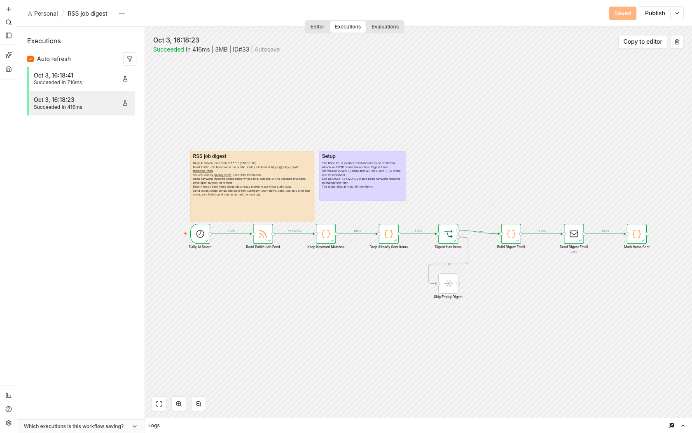

WorkflowKit
Three n8n workflow templates for a portfolio demo: lead intake, uptime checks, and a daily RSS job digest. Each template is a published workflow.json that n8n can import from a file. They use official nodes only. Credential fields are left empty so a person can attach their own Google Sheets, Slack, and SMTP credentials in the n8n editor.
The workflows were executed on a local n8n 2.41.6 process with Node v24.21.0. The static page in dist/ does not start n8n. These templates were not submitted to the n8n Creator Hub.
Problem → Solution → Result
Problem
- The portfolio had Python automation demos and no importable n8n workflow.
- A lead form, an uptime check, and a job digest are small enough to read and still show validation, dedupe, scoring, retries, and a separate error path.
Solution
templates/lead-intakeaccepts a POST, validates it, drops the same address on the same UTC day, scores the message, appends a Google Sheets row, and posts to Slack. Sheet and Slack failures use the node error output and write a log entry in workflow static data.templates/uptime-watcherchecks a list of URLs every 10 minutes. The first failure is quiet. The second consecutive failure sends one down email. Further failures stay quiet. The next success after a down status sends a recovery email. Counts live in workflow static data.templates/rss-job-digestreads the public Jobicy RSS feed once a day, keeps keyword matches, hides items already sent, and emails one summary. Each digest item links back to the original Jobicy listing. Ids are stored only after the email node finishes. Source: Jobicy (jobicy.com), used with attribution.
Result
- Each published file imports as its own workflow. A local run produced one success execution per template. The redacted records are
templates/<slug>/execution.json. Editor screenshots are indocs/screenshots/. - Local execution id for lead intake: 28. Uptime recovery execution: 32. RSS digest execution: 33.
These are capabilities of this project, not claims about a client engagement. No customer counts or testimonials are included.
What the local run actually called
Google Sheets and Slack were not called. There is no account for either one on this machine.
- Append Lead Row and Post Lead Notification stayed Google Sheets and Slack nodes in the downloadable JSON. The runner built a test copy in the local database and rewrote those two nodes to HTTP Request calls against
127.0.0.1. A Python process recorded the calls and did not forward them. - Send Email used the real n8n SMTP node with a credential that points at
127.0.0.1port 2525. A local SMTP receiver wrote each message to disk. Nothing left the machine. - Uptime URLs in the published file are
https://example.com/andhttps://example.org/. The test copy replaced those two strings inside List Watched URLs with two local health URLs, one of which returns HTTP 500 until the runner flips it. - Read Public Job Feed uses
https://jobicy.com/?feed=job_feed. Source: Jobicy (jobicy.com), used with attribution. Each digest item links back to the original Jobicy listing. Remotive (https://remotive.com/remote-jobs/feed) is a documented alternative. The runner records indocs/local-run.jsonwhich source the local run actually read: Jobicy, Remotive when Jobicy is unreachable, or a local fixture when both are unreachable. - Manual runs of the schedule workflows do not persist workflow static data in n8n 2.41. The runner copied the state those Code nodes had already computed into the local sqlite file while n8n was stopped, then started n8n again for the next run. The lead webhook path is not manual, so n8n saved that static data itself.
The owner account exists only in .n8n-local/ and uses the reserved name owner@example.invalid. That directory is gitignored.
Layout
| Path | Role |
|---|---|
templates/<slug>/workflow.json | Published workflow. Import this file. |
templates/<slug>/README.md | Purpose, credentials, setup, and tunable parameters. |
templates/<slug>/execution.json | One redacted local execution. |
templates/<slug>/screenshots/ | Editor canvas and that execution. |
showcase/build.py | Builds the static page. python3 showcase/build.py --out dist. |
dist/ | Static page produced by the build. |
scripts/local_n8n.sh | start, stop, import, run, status. |
scripts/verify_local_n8n.sh | Import, run, and assert success. |
scripts/bootstrap_tools.sh | Download local Node 24 and n8n if they are missing. |
docs/local-run.json | Execution ids, statuses, and the mock notes. |
docs/screenshots/ | Copies of the editor screenshots for the portfolio case study. |
Slugs are lead-intake, uptime-watcher, and rss-job-digest.
Run it again
Node on PATH for these scripts is .tools/node-v24.21.0-linux-x64/bin/node. The system Node at /usr/bin/node is not used. n8n listens on 127.0.0.1:5688 only. Telemetry and version notices are turned off.
scripts/bootstrap_tools.sh
scripts/verify_local_n8n.sh
scripts/local_n8n.sh stopverify_local_n8n.sh starts the mock HTTP/SMTP process and n8n, imports the three published workflows, screenshots the canvases, applies the test-copy patch inside n8n, runs each workflow, writes the redacted execution files, and screenshots the execution records. Stop releases port 5688.
Tests
.venv/bin/pytest -qPytest 8.3.5 is installed in .venv. The tests check workflow shape, official node types, sticky notes, names, secrets in the JSON and execution exports, the Code-node functions (via the local Node 24 binary), and a showcase build in a temporary directory.
Static page
python3 showcase/build.py --out distOpen dist/index.html. Links are relative, so the same files work under /portfolio/workflowkit/. The page states that the workflows were run on local n8n and that the public page does not run n8n.
Screenshots


